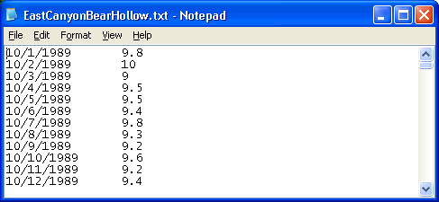
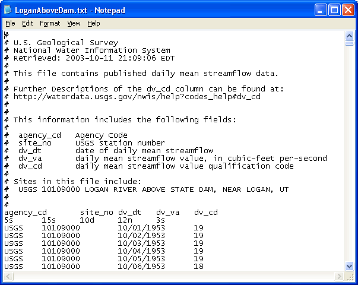
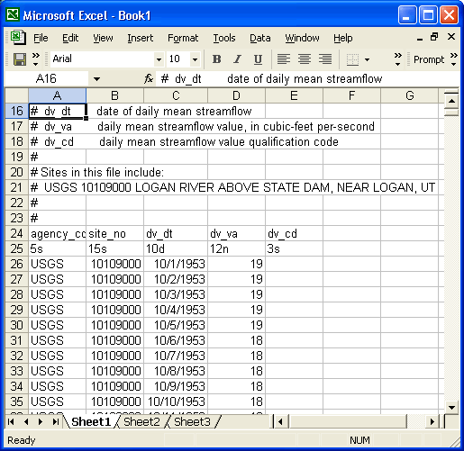

Loading Data
into Low Flow Calculator™
To use your data in Low Flow Calculator™, you must save it in an ASCII text
format, one line per observation, with dates and streamflow values separated by
commas or tabs. Load your data file into Low Flow Calculator™ using the
"File|Load Data File" menu item. The following figure shows the ASCII
formatting required by Low Flow Calculator™:

Note the following data
file requirements:
-
The data must consist of
sequential daily values. If you have missing data, then do not include the date
for that day. Every line must have one date and one value.
-
Dates and values may be
separated by commas or tabs only.
-
There should not be any comments
or text in the file other than the date-value pairs.
-
Check that there is not an extra
"enter" at the end of your data as this could cause problems.
-
A sample streamflow data set formatted correctly for
Low Flow Calculator™ is included with the product installation and can be
accessed by selecting the "Load sample data" option from
the welcome form.
To format USGS streamflow
data for use in Low Flow Calculator™, take the following steps:
-
Download the data from http://h2o.usgs.gov/.
You will need to hunt for your data on this site. The NWIS data is
historical daily streamflow data and works well in Low Flow
Calculator™. When downloading data from USGS, make
sure that you select the right date formatting (mm/dd/yyyy), and select the
"tab-delimeted file" option. The data file you download may look like this:

-
Copy and paste the contents of this file into Excel or
an equivalent spreadsheet program. It may look like this:

-
Now, select the columns and rows of data that contain
just the date and value pairs (in columns C and D in the above figure, starting
at row 26.) Copy this data and paste it into a new Notepad file.
-
Save the new Notepad file with a meaningful name (i.e.
"LoganRiverAboveStateDam.txt").
This data file is now ready to be read into Low Flow Calculator™ and used to
compute low and high streamflow estimates. Load your data intLow Flow
Calculator™ by selecting "Load Data File" from the "Load" menu on the main
form. Browse to your data file and click the "Open" button. If you
have a particularly large data set, it may take several seconds
to load the data into memory and to draw its time series plot. Once the
data is loaded into Low Flow Calculator™, you can set parameters, and execute
the analysis.